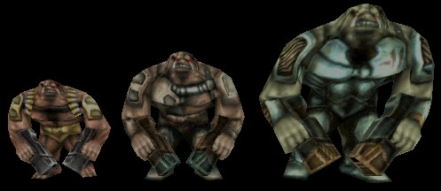

Brute

From left: LesserBrute, Brute, and Behemoth. A standard Brute is slightly taller than a SkaarjTrooper. |
Brutes are genetically engineered creatures designed to serve the Skaarj as beasts of burden or as sentries. No one knows if they were designed from scratch by the Skaarj, or if the Skaarj enslaved them and modified them to suit their current role. All Brutes are armed with rocket pistols that they wield the way a Human would wield a pair of a normal pistols.
Despite their size and firing tendencies, Brutes are severely limited in combat by their low agility and near-nonexistent intelligence, typically preferring to stand stationary to launch rockets, or to charge straight at their target in an attempt to engage in melee combat.
Remember, if you see a brute with a shield belt, get cover! His rockets have heat-seeking abilities. This model is typically known as a Battle Brute. (Operation: Na Pali only.)
Properties
- WhipDamage
- This byte variable determines the base amount of damage that the Brute does whenever it swats at a target with its rocket pistol.
- bTurret
- If this variable is set to True, then the Brute will not walk or move around at all. It just basically does nothing but turn in place and fire rockets at its targets.
Known Subclasses
Brute
+- LesserBrute (UT only)
+- Behemoth?Related Topics
- Monster Support
- Invasion (UT2004 gametype)